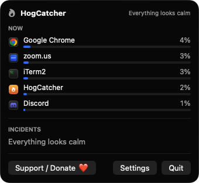
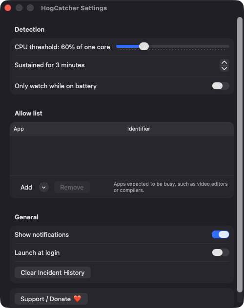
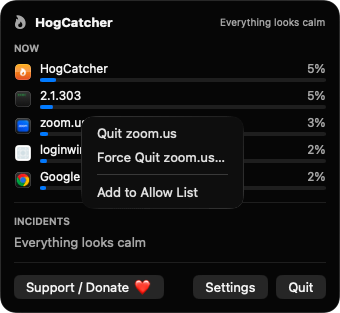

Sustained background CPU detection
CPU use is sampled every 5 seconds. An app is flagged when it stays above your threshold (default 60% of one core) for your chosen time (default 3 minutes) while it is not frontmost.
Open source · macOS 14+ · Universal binary · System Monitoring
HogCatcher lives in your menu bar and warns you when a background app keeps your CPU busy. Click the flame to see the top offenders and quit one in a click.
Free & MIT licensed · Apple Silicon & Intel · Latest release

Features
HogCatcher watches for sustained background CPU use and gives you a quick way to deal with it.
CPU use is sampled every 5 seconds. An app is flagged when it stays above your threshold (default 60% of one core) for your chosen time (default 3 minutes) while it is not frontmost.
The flame icon is gray when things are calm and orange while a hog is active. The popover shows the top five CPU users with live bars, with browsers and their helpers grouped as one app.
Each warning names the app, how hard and how long it ran, with Quit App, Ignore for Today and Never Warn buttons. Repeat warnings for the same app are snoozed for 30 minutes.
Set the CPU threshold from 20 to 200% and the duration from 1 to 30 minutes. Add video editors, compilers and other apps that are expected to be busy to the allow list.
Turn on the option to watch only while you are on battery. While plugged in, the popover shows that monitoring is paused.
Force Quit asks for confirmation, and Finder, WindowServer, loginwindow, kernel_task and HogCatcher itself are never offered for quitting. Root-owned system processes are listed for information only.
Screenshots


Install
HogCatcher is open source and not notarized with a paid Apple Developer ID, so macOS needs one extra step the first time.
xattr -cr /Applications/HogCatcher.app
Download
Free, forever. Built for macOS 14 Sonoma or newer, Apple Silicon and Intel.
Not notarized: on first launch right-click HogCatcher.app → Open.
FAQ
Yes. It is released under the MIT license and the full source is on GitHub. There is no account, server or analytics, and you can build it yourself with Xcode and XcodeGen.
Only notifications, so it can warn you about a hog. If you decline, the popover and incident list still work. It does not ask for Accessibility, Screen Recording, Full Disk Access or similar, and launch at login is optional.
Entirely on your Mac. Settings are kept in UserDefaults, and incident history (capped at 100 entries) is saved as JSON at ~/Library/Application Support/HogCatcher/incidents.json.
Notarization requires a paid Apple Developer account, and HogCatcher is a free project. Right-click the app and choose Open once to get past Gatekeeper, or build it from source.
Support ❤️
HogCatcher is a free, open-source alternative to paid utilities. If it earns a spot on your Mac, a coffee keeps the updates coming.
☕ Support Or on Ko-fi